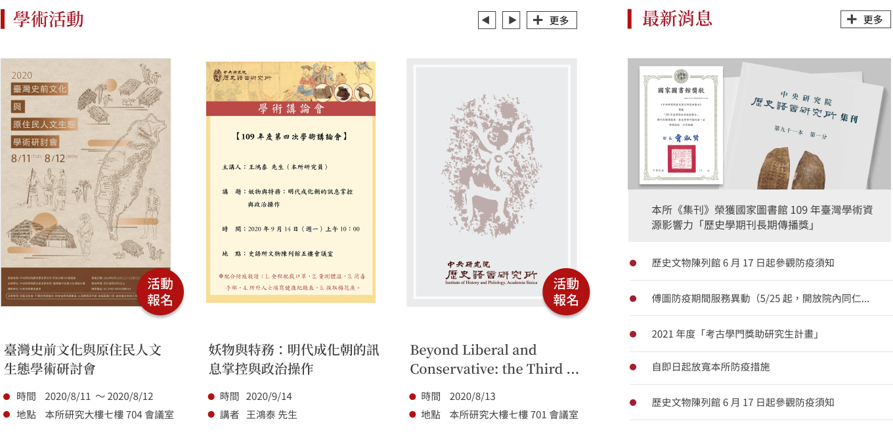
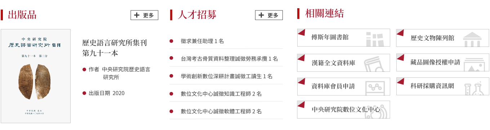

<!DOCTYPE html>
<html lang="en">
<head>
    <meta charset="UTF-8">
    <meta http-equiv="X-UA-Compatible" content="IE=edge">
    <meta name="viewport" content="width=device-width, initial-scale=1.0">
    <link rel="icon" href="https://www.xuedesign.tw/images/favicon.ico"/>
    <title>Index｜Institute of History and Philology, Academia Sinica</title>
    <link rel="stylesheet" href="css/en-Style.css">
    <link rel="stylesheet" href="css/en-Expansion.css">
    <link rel="stylesheet" href="css/en-Rwd.css">
</head>
<body>
    
</body>
    
        <div id="wrap">
            <header>
                <div id="hdr-fixed-red2">
                    <a href="#" title="">
                        <div id="hdr-main">
                            
                        </div>
                    </a>
                    
                    <div id="nav-top">
                        <nav>
                            <ul class="sf-menu" id="example">
                                <li class="current"><a href="en-us/bulletin/list-events-all.html" title="Bulletin">Bulletin</a>
                                    <ul>
                                        <li class="current">
                                            <a href="en-us/bulletin/list-events-all.html" title="Events">Events</a>
                                            <ul>
                                                <li><a href="en-us/bulletin/ihp-lectures.html" title="IHP Lectures">IHP Lectures</a></li>
                                                <li><a href="en-us/bulletin/guest-lectures.html" title="Guest Lectures">Guest Lectures</a></li>
                                                <li><a href="en-us/bulletin/conferences.html" title="Conferences">Conferences</a></li>
                                                <li><a href="en-us/bulletin/student-workshops.html" title="Student Workshops">Student Workshops</a></li>
                                                <li><a href="en-us/bulletin/fu-ssu-nien-lectures.html" title="Fu Ssu-nien Lectures">Fu Ssu-nien Lectures</a></li>
                                            </ul></li>
                                        <li><a href="en-us/bulletin/list-news-all.html" title="News">News</a>
                                            <ul>
                                                <li><a href="en-us/bulletin/visiting-scholars.html" title="Visiting Scholars">Visiting Scholars</a></li>
                                                <li><a href="en-us/bulletin/awards.html" title="Awards">Awards</a></li>
                                                <li><a href="en-us/bulletin/announcements.html" title="Announcements">Announcements</a></li>
                                                <li><a href="en-us/bulletin/applications.html" title="Applications">Applications</a></li>
                                            </ul></li>
                                        <li><a href="en-us/bulletin/positions-available.html" title="Positions Available">Positions Available</a></li>            
                                    </ul>
                                </li>
                                <li><a href="en-us/about/overview.html" title="About IHP">About IHP</a>
                                    <ul>
                                        <li><a href="en-us/about/overview.html" title="Overview">Overview</a></li>
                                        <li><a href="en-us/about/organization.html" title="Organization">Organization</a></li>
                                        <li><a href="en-us/about/director-and-deputy-directors.html" title="Director and Deputy Directors">Director and<br>Deputy Directors</a></li>
                                        <li><a href="en-us/about/past-directors.html" title="Past Directors">Past Directors</a></li>
                                        <li><a href="en-us/about/departments.html" title="Departments">Departments</a>
                                            <ul>
                                                <li><a href="en-us/about/history-departments.html" title="History">History</a></li>
                                                <li><a href="en-us/about/archaeology-departments.html" title="Archaeology">Archaeology</a></li>
                                                <li><a href="en-us/about/anthropology-departments.html" title="Anthropology">Anthropology</a></li>
                                                <li><a href="en-us/about/philology-departments.html" title="Philology">Philology</a></li>
                                            </ul>
                                        </li>
                                        <li><a href="en-us/about/advisory-board.html" title="Advisory Board">Advisory Board</a></li>6           
                                    </ul>
                                </li>
                                <li><a href="en-us/people/research-fellows.html" title="People">People</a>
                                    <ul>
                                        <li><a href="en-us/people/research-fellows.html" title="Research Fellows">Research Fellows</a></li>
                                        <li><a href="en-us/people/research-specialist.html" title="Research Specialist">Research Specialist</a></li>
                                        <li><a href="en-us/people/corresponding-and-adjunct-research-fellows.html" title="Corresponding and<br>Adjunct Research Fellows">Corresponding and<br>Adjunct Research Fellows</a>
                                            <ul>
                                                <li><a href="en-us/people/corresponding-research-fellows.html" title="Corresponding Research<br>Fellows">Corresponding<br>Research Fellows</a></li>
                                                <li><a href="en-us/people/adjunct-research-fellows.html" title="Adjunct Research<br>Fellows">Adjunct<br>Research Fellows</a></li>
                                            </ul>
                                        </li>
                                        <li><a href="en-us/people/retired-resigned-research-fellows.html" title="Retired/Resigned<br>Research Fellows">Retired/Resigned<br>Research Fellows</a></li>
                                        <li><a href="en-us/people/postdoctoral-research-associate.html" title="Postdoctoral Research Associate">Postdoctoral<br>Research Associate</a></li>
                                        <li><a href="en-us/people/doctoral-candidate-fellows.html" title="Doctoral Candidate Fellows">Doctoral Candidate Fellows</a></li>
                                        <li><a href="en-us/people/visiting-scholars-students.html" title="Visiting Scholars/Students">Visiting Scholars/Students</a></li>
                                        <li><a href="en-us/people/administrative-staff.html" title="Administrative Staff">Administrative Staff</a></li>
                                    </ul>
                                </li>
                                <li><a href="en-us/working-groups/research-centers.html" title="Working Groups">Working Groups</a>
                                    <ul>
                                        <li><a href="en-us/working-groups/research-centers.html" title="Research Centers">Research Centers</a>
                                            <ul>
                                                <li><a href="en-us/working-groups/cultural-and-intellectual-history.html" title="Cultural and Intellectual History">Cultural and<br>Intellectual History</a></li>
                                                <li><a href="en-us/working-groups/legal-history.html" title="Legal History">Legal History</a></li>
                                                <li><a href="en-us/working-groups/archaeology-of-taiwan-and-southeast-asia.html" title="Archaeology of Taiwan and Southeast Asia">Archaeology of Taiwan <br>and Southeast Asia</a></li>
                                                <li><a href="en-us/working-groups/images-and-artifacts.html" title="Images and Artifacts">Images and Artifacts</a></li>
                                                <li><a href="en-us/working-groups/history-of-health-and-healing.html" title="History of Health and Healing">History of Health<br>and Healing</a></li>
                                                <li><a href="en-us/working-groups/custom-religion-and-daily-life.html" title="Custom, Religion, and Daily Life">Custom, Religion,<br>and Daily Life</a></li>
                                                <li><a href="en-us/working-groups/world-history.html" title="World History">World History</a></li>
                                                <li><a href="en-us/working-groups/ancient-civilizations.html" title="Ancient Civilizations">Ancient Civilizations</a></li>
                                                <li><a href="en-us/working-groups/digital-humanities.html" title="Digital Humanities">Digital Humanities</a></li>
                                            </ul>
                                        </li>
                                        <li><a href="en-us/working-groups/research-groups.html" title="Research Groups">Research Groups</a>
                                            <ul>
                                                <li><a href="en-us/working-groups/grand-secretariat.html" title="Grand Secretariat">Grand Secretariat</a></li>
                                                <li><a href="en-us/working-groups/scripta-sinica.html" title="Scripta Sinica">Scripta Sinica</a></li>
                                                <li><a href="en-us/working-groups/geographical-information-systems.html" title="Geographical Information Systems">Geographical<br>Information Systems</a></li>
                                                <li><a href="en-us/working-groups/bronze-inscriptions.html" title="Bronze Inscriptions">Bronze Inscriptions</a></li>
                                                <li><a href="en-us/working-groups/anyang-archaeological-site.html" title="Anyang Archaeological Site">Anyang<br>Archaeological Site</a></li>
                                            </ul>
                                        </li>
                                    </ul>
                                </li>
                                <li><a href="en-us/publications/latest-publications.html" title="Publications">Publications</a>
                                    <ul>
                                        <li><a href="en-us/publications/latest-publications.html" title="Latest Publications">Latest Publications</a></li>
                                        <li><a href="en-us/publications/books-thumbnail.html" title="Books">Books</a>
                                            <ul>
                                                <li><a href="en-us/publications/philology-thumbnail.html" title="Philology">Philology</a></li>
                                                <li><a href="en-us/publications/historical-documents-list.html" title="Historical Documents">Historical Documents</a></li>
                                                <li><a href="en-us/publications/archeology-thumbnail.html" title="Archeology">Archeology</a></li>
                                                <li><a href="en-us/publications/ethnology-thumbnail.html" title="Ethnology">Ethnology</a></li>
                                                <li><a href="en-us/publications/indexes-thumbnail.html" title="Indexes">Indexes</a></li>
                                                <li><a href="en-us/publications/fu-ssu-nien-lectures-thumbnail.html" title="Fu Ssu-nien Lectures">Fu Ssu-nien Lectures</a></li>
                                                <li><a href="en-us/publications/sinology-conference-proceedings-thumbnail.html" title="Sinology Conference Proceedings">Sinology Conference<br>Proceedings</a></li>
                                            </ul>   
                                        </li>
                                        <li><a href="en-us/publications/bulletin-of-ihp-thumbnail.html" title="Bulletin of IHP">Bulletin of IHP</a></li>
                                        <li><a href="en-us/publications/disquisitions-on-the-past-and-present-thumbnail.html" title="Disquisitions on the Past & Present">Disquisitions on the Past<br>&amp; Present</a></li>
                                        <li><a href="en-us/publications/asia-major-thumbnail.html" title="Asia Major">Asia Major</a></li>
                                        <li><a href="en-us/publications/journal-for-legal-history-studies-thumbnail.html" title="Journal for Legal History Studies">Journal for Legal<br>History Studies</a></li>
                                        <li><a href="en-us/publications/catalog.html" title="Catalog">Catalog</a></li>
                                        <li><a href="en-us/publications/book-prices.xls" title="Prices download(Open new window)">Prices(download)</a></li>
                                        <li><a href="en-us/publications/how-to-subscribe.html" title="How to Subscribe">How to Subscribe</a></li>
                                    </ul>
                                </li>
                                <li><a href="en-us/academic-resources/fu-ssu-nien-library.html" title="Academic Resources">Academic Resources</a>
                                    <ul>
                                        <li><a href="en-us/academic-resources/fu-ssu-nien-library.html" title="Fu Ssu-nien Library">Fu Ssu-nien Library</a></li>
                                        <li><a href="en-us/academic-resources/ihp-museum.html" title="IHP Museum">IHP Museum</a></li>
                                        <li><a href="en-us/academic-resources/ihp-archives.html" title="IHP Archives">IHP Archives</a></li>
                                        <li><a href="en-us/academic-resources/ihp-databases.html" title="IHP Databases">IHP Databases</a></li>
                                    </ul>
                                </li>
                                <li><a href="en-us/outreach/international-scholarly-cooperation-and-exchanges.html" title="Outreach">Outreach</a>
                                    <ul id="upooo">
                                        <li><a href="en-us/outreach/international-scholarly-cooperation-and-exchanges.html" title="International Scholarly Cooperation and Exchanges">International Scholarly<br>Cooperation and<br>Exchanges</a></li>
                                        <li><a href="en-us/outreach/fu-ssu-nien-scholarship.html" title="Scholarships">Scholarships</a>
                                            <ul id="ooo">
                                                <li><a href="en-us/outreach/fu-ssu-nien-scholarship.html" title="Fu Ssu-nien Scholarship">Fu Ssu-nien<br>Scholarship</a></li>
                                                <li><a href="en-us/outreach/huang-chang-chien-academic-research-scholarship.html" title="Huang Chang-chien Academic Research Scholarship">Huang Chang-chien<br>Academic Research<br>Scholarship</a></li>
                                            </ul>
                                        </li>
                                        <li><a href="http://www.ihp.sinica.edu.tw/~ihpcamp/" title="IHP History Workshop(Open new window)" target="_blank">IHP History<br>Workshop</a></li>
                                        <li><a href="http://www.ihp.sinica.edu.tw/~CScamp/" title="Cross-Strait History & Culture Workshop(Open new window)" target="_blank">Cross-Strait History<br>&amp; Culture Workshop</a></li>
                                        <li><a href="http://mingching.sinica.edu.tw" title="Committee for Promoting Ming-Qing Studies(Open new window)" target="_blank">Committee for<br>Promoting Ming-Qing<br>Studies</a></li>
                                        <li><a href="en-us/outreach/ihp-art-gallery.html" title="IHP Art Gallery">IHP Art Gallery</a></li>
                                    </ul>
                                </li>
                            </ul>               
                        </nav>

                    </div>
                </div>
            </header>
            
            <div id="banner" class="main-carousel">
                <div class="banner-main">
                          
                </div>
                <div class="banner-main">
                          
                </div>
                <div class="banner-main">
                          
                </div>
                <div class="banner-main">
                          
                </div>
                <div class="banner-main">
                          
                </div>
                <div class="banner-main">
                          
                </div>
                <div class="banner-main">
                    <div class="banner-info">
                        <div class="info-main">
                            <h2>窮碧落下黃泉，動手動腳找東西</h2>
                            <!--<h3>上窮碧落下黃泉，動手動腳找東西</h3>-->
                        </div>
                    </div>  
                    
                </div>
            </div>

            <!--<div id="banner">
                <div id="homepage-hero" class="hero-slider">
                <div class="item zoom-out">
                	<div class="image-holder">
                        <div class="bg" style="background-image:url(images/Banner-01.png)">
                            <span class="mask"></span>
                        </div>
                    </div>
                    <div class="inner">
                        <div class="data">
                            <div class="category">展覽與活動</div>
                            <div class="title">商王動物園：甲骨中的蟲魚鳥獸</div>
                            <div class="contents">展期：2020年8月22日起<br>展區：一樓甲骨區</div>
                            <a href="exhibitions/75/" class="box-btn" >了解更多</a>
                        </div>
                    </div>
                </div>
                
                <div class="item ">
                	<div class="image-holder">
                        <a href="events/113/"  class="bg" style="background-image:url(images/Banner-02.png)">
                        <span class="mask"></span></a>
                    </div>
                </div>

                <div class="item ">
                	<div class="image-holder">
                        <a href="events/113/"  class="bg" style="background-image:url(images/Banner-03.png)">
                        <span class="mask"></span></a>
                    </div>
                </div>
            </div>--><!--//end  #homepage-hero-->
            </div>

            <div id="cindex">
                
                
            </div>
            
            <footer>
                <div id="ftr-main">
                    
                </div>
            </footer>
        </div><!--//end #wrap-->

        <script src="https://cdn.jsdelivr.net/npm/jquery@2.2.4/dist/jquery.min.js"></script>
        <script src="https://cdn.jsdelivr.net/npm/superfish@1.7.10/dist/js/superfish.min.js"></script>
        <script>
            jQuery(document).ready(function() {
              jQuery('ul.sf-menu').superfish({
                cssArrows: false,
                delay: 0,
              });
            });
        </script>
        
        <script src="https://unpkg.com/flickity@2/dist/flickity.pkgd.min.js"></script>
        <script>
            $('.main-carousel').flickity({
            // options
            cellAlign: 'left',
            contain: 'true',
            autoPlay: '3000',
            pauseAutoPlayOnHover: 'false',
            accessibility: 'true',
            });
        </script>
        <script src="script/HeroSlider.js"></script>
        
        <script>
            (function(){
                var obj = document.getElementById("nav-top");
                var top = getTop(obj);
                var isIE6 = /msie 6/i.test(navigator.userAgent);
                window.onscroll = function(){
                    var bodyScrollTop = document.documentElement.scrollTop || document.body.scrollTop;
                    if (bodyScrollTop > top){
                        obj.style.position = (isIE6) ? "absolute" : "fixed";
                        obj.style.top = (isIE6) ? bodyScrollTop + "px" : "0px";
                    } else {
                        obj.style.position = "static";
                    }
                }
                function getTop(e){
                    var offset = e.offsetTop;
                    if(e.offsetParent != null) offset += getTop(e.offsetParent);
                    return offset;
                }
            })()
            </script>  
</html>


<!-- Created By
   ##############               ###############   
    ##############             ###############    
    ##############             ##############     
     ##############           ##############      
      ##############          #############       
       #############         ##############       
        #############       ##############        
        ##############      #############         
         ###############################          
         ###############################          
        #################################         
        ##############     ##############         
       ##############       ##############        
       ##############        ##############       
      ##############         #######           
     ###############          ##############      
     ##############           ###############     
    ######      
    ##############              ##############    
   ##############               ##############
          
                 xuedesign studio 
             https://www.xuedesign.tw/
--> 